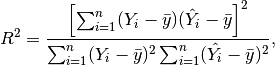
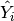

nonparametric
KernelCensoredReg.
r_squared
Returns the R-Squared for the nonparametric regression.
Notes
For more details see p.45 in [2] The R-Squared is calculated by:

where  is the mean calculated in fit at the exog points.
statsmodels.nonparametric.kernel_regression.KernelCensoredReg.fit
statsmodels.nonparametric.kernel_regression.KernelCensoredReg.sig_test
Enter search terms or a module, class or function name.